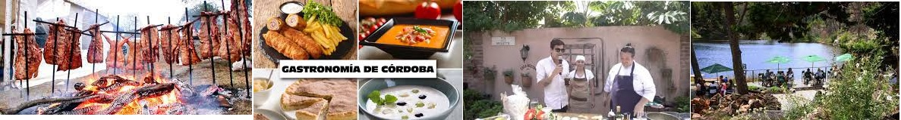

Gastronomía y Lugares para Visitar en Córdoba
La provincia de Córdoba, situada en la región central de Argentina, cuenta con una rica tradición gastronómica que refleja la diversidad de influencias culturales en la región. La comida cordobesa se caracteriza por su mezcla de sabores autóctonos y elementos de la cocina española e italiana.
Opciones Gastronómicas
